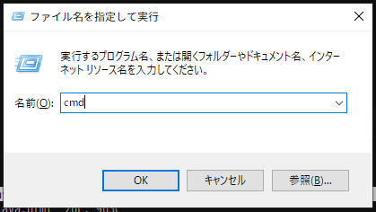
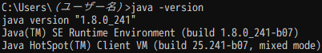
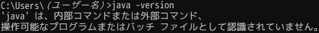

Minecraft本体やForgeのインストーラーに必要なJava 8がインストールされているか確認します。
1. Windowsキー  + Rを同時に押してファイル名を指定して実行ウィンドウを出します
+ Rを同時に押してファイル名を指定して実行ウィンドウを出します
2. cmdと入力してEnterキーを押します

3. java -versionと入力してEnterキーを押します
インストールされている場合
java version "1.8.0_xxx" (xxxはバージョン番号)と表示されます。

2. Modの導入準備に進んでください。
インストールされていない場合
インストールされていないか適切に設定されていない場合、
'java'は、内部コマンドまたは外部コマンド、
操作可能なプログラムまたはバッチ ファイルとして認識されていません。と表示されます。

このページに従ってインストールし、上の手順をもう一度実行してください。
トップページへ戻る